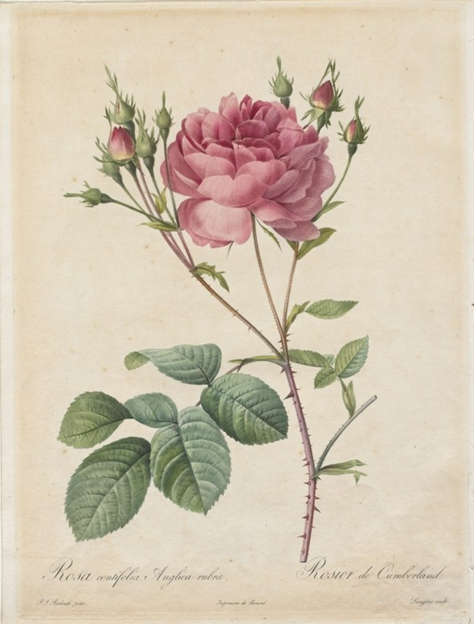

Uma rosa
para vocês.

♡ Um provérbio para vocês
Favo de mel são as palavras suaves, doces para a alma, e saúde para os ossos.
Que palavra de carinho vocês gostariam de ouvir um do outro hoje?
Aproximem o chaveiro do celular de novo para descobrir o próximo provérbio.
Com carinho, da Nollie para vocês.